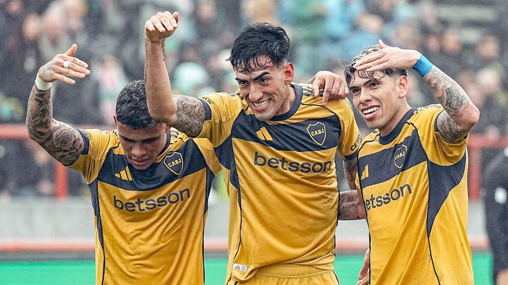
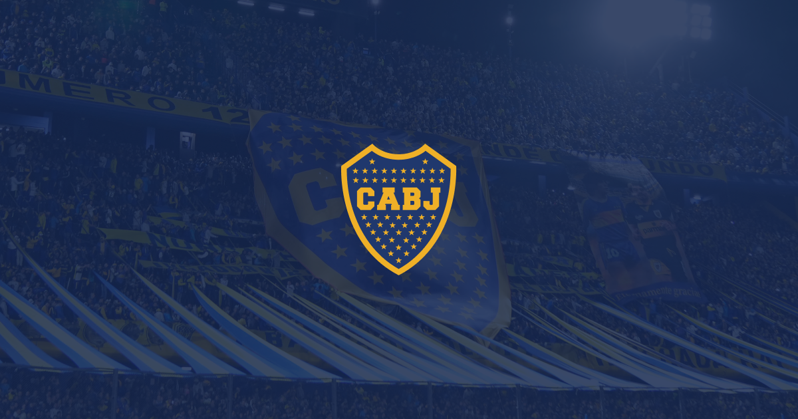
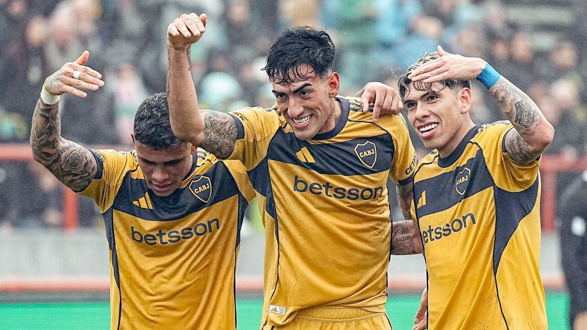
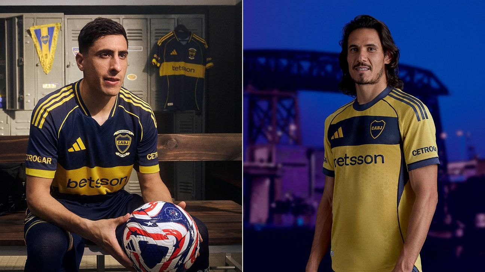
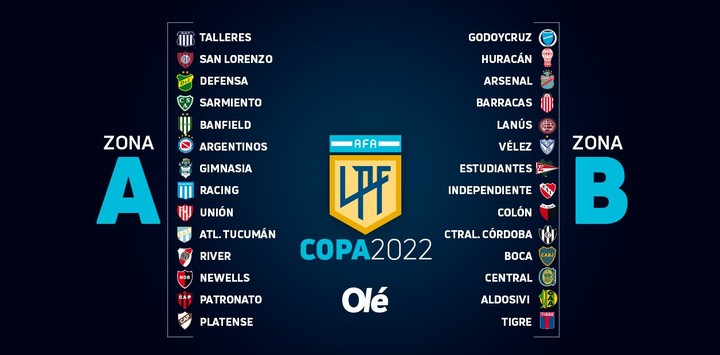

Victoria en Mar del Plata
Boca Juniors se impuso con autoridad en condicion de visitante y sigue peleando en los primeros puestos del torneo en busca de su clasificación a la Copa Libertadores.
 Leer más...Aca vas a encontrar todas las novedades, noticias, fotos y la información oficial del club más grande de la Argentina. Seguí de cerca cada partido, cada título y la pasión que nos une: Boca Juniors.
Boca Juniors se impuso con autoridad en condicion de visitante y sigue peleando en los primeros puestos del torneo en busca de su clasificación a la Copa Libertadores.
 Leer más...El club presentó la nueva indumentaria oficial, inspirada en la rica historia y tradición xeneize.
 Leer más...Enterate del cronograma de entrenamientos, partidos y actividades del primer equipo durante el mes de Septiembre.
 Leer más...